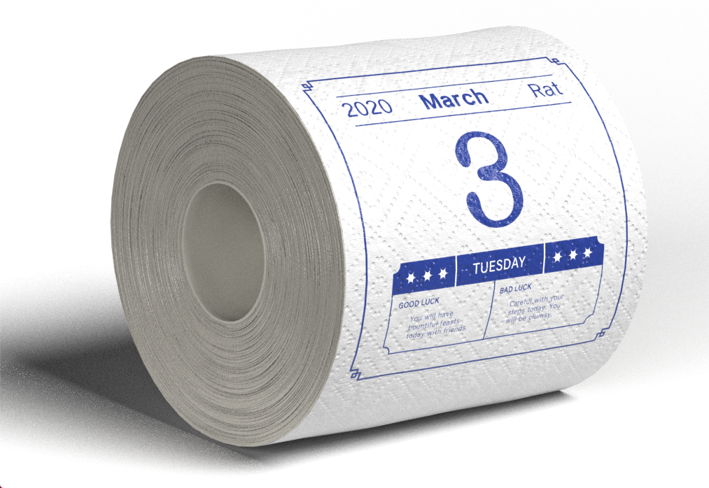
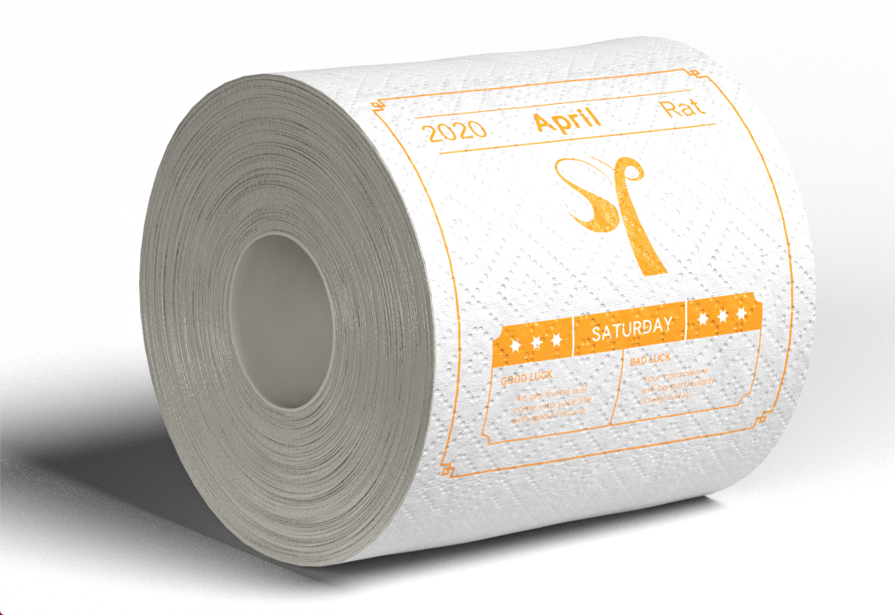
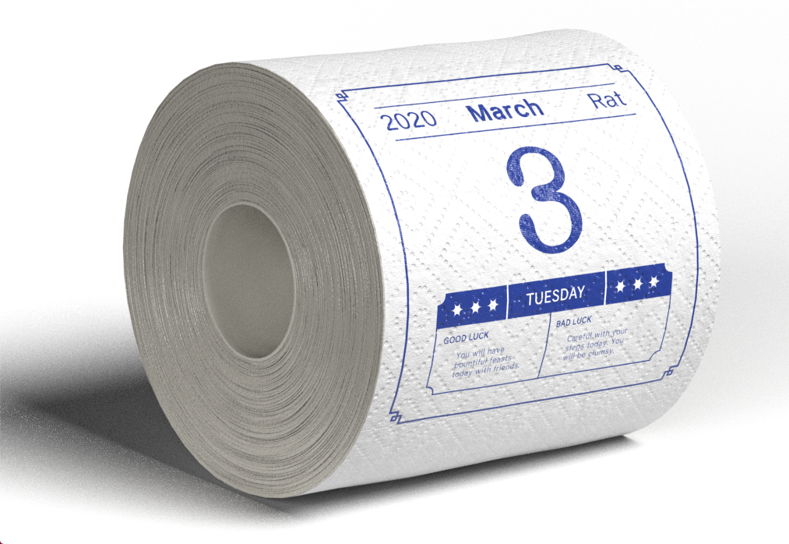
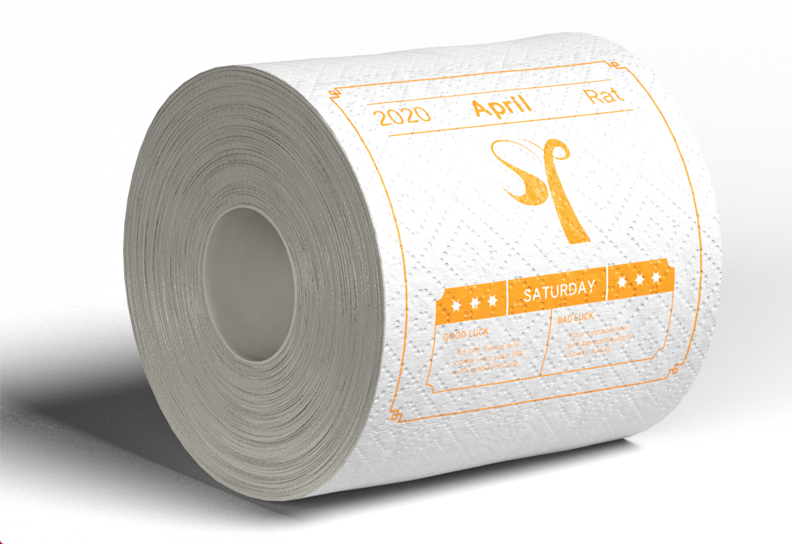

Need help rationing your toilet paper? Keep forgetting what day it is? Quarantine Calendar is for you. It is a daily calendar made out of toilet paper. Each roll is one month, available to purchase as a 6 or 12 pack. On each day, it also tells you good luck and bad luck fortunes. Quarantine Calendar was inspired not only by the 2020 pandemic, but also Chinese daily calendars distributed in Asian supermarkets.


 


